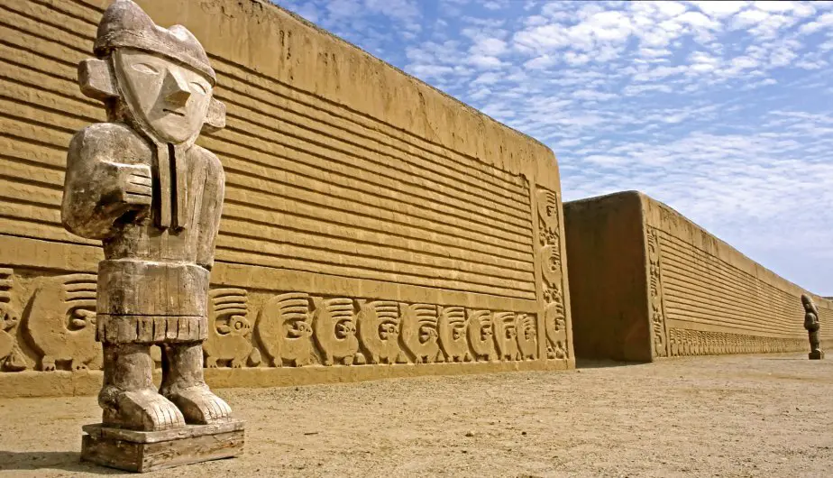
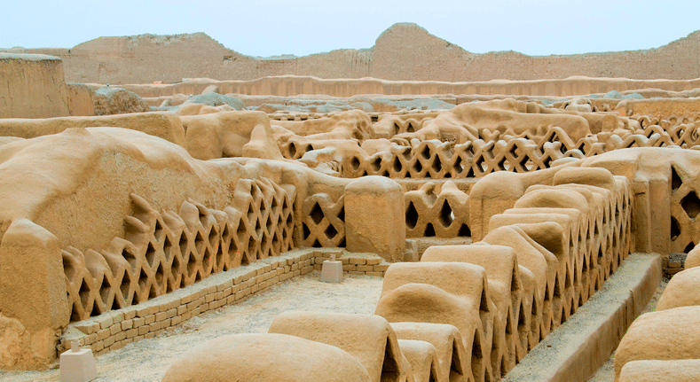
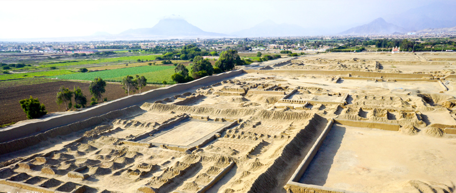
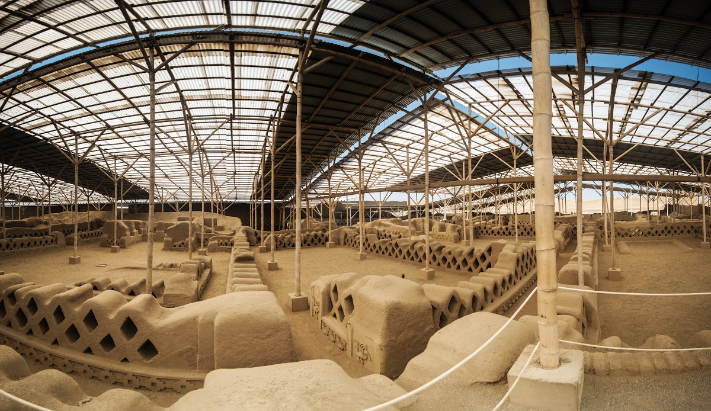

🏯 Ciudadela de Chan Chan - Patrimonio de la Humanidad 🌍
La Ciudadela

- Capital del reino Chimú, ubicada en Trujillo, La Libertad.
- Es la ciudad de adobe más grande de América.
- Declarada Patrimonio de la Humanidad por la UNESCO en 1986.
Palacios y Recintos

- Construidos por cada gobernante chimú como centros administrativos.
- Incluyen patios ceremoniales, depósitos y salas de audiencia.
- Destacan sus murales con relieves geométricos y marinos.
Murales y Decoración

- Relieves que representan peces, aves y olas, símbolos de su vínculo con el mar.
- Los muros de barro muestran un arte único de la cultura Chimú.
- Reflejan la importancia de la pesca y el comercio marítimo.
Turismo y Conservación

- Es uno de los destinos más visitados del norte del Perú.
- Cuenta con zonas abiertas al público y otras en restauración.
- Se trabaja en proyectos de conservación para protegerla de la lluvia y el clima.